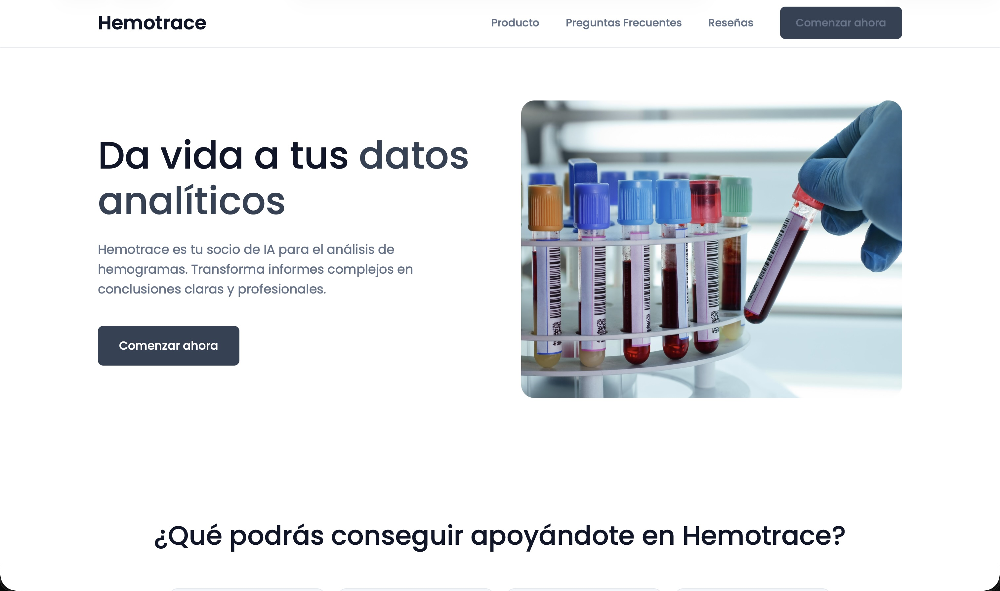

<!DOCTYPE html>
<html lang="es">
<head>
    <meta charset="UTF-8">
    <meta name="viewport" content="width=device-width, initial-scale=1.0">
    <title>Hemotrace - Concurso ideas UGR</title>
    
    <script crossorigin src="https://unpkg.com/react@18/umd/react.development.js"></script>
    <script crossorigin src="https://unpkg.com/react-dom@18/umd/react-dom.development.js"></script>
    <script crossorigin src="https://unpkg.com/@babel/standalone/babel.min.js"></script>
    
    <script src="https://cdn.tailwindcss.com"></script>
    
    <link rel="preconnect" href="https://fonts.googleapis.com">
    <link rel="preconnect" href="https://fonts.gstatic.com" crossorigin>
    <link href="https://fonts.googleapis.com/css2?family=Poppins:wght@300;400;500;600;700&display=swap" rel="stylesheet">

    <style>
        /* --- ESTÉTICA CLEAN / THIN FONTS (AJUSTADA: MÁS LEGIBLE) --- */
        body {
            font-family: 'Poppins', sans-serif;
            background-color: #FAFAFA;
            color: #1d1d1f;
            font-weight: 400; /* ANTES 300: Ahora es normal para mejor lectura */
            overflow-x: hidden;
            margin: 0;
            padding: 0;
            -webkit-font-smoothing: antialiased;
        }

        /* Títulos finos pero con más cuerpo que antes */
        h1, h2, h3, h4 {
            font-weight: 300; /* ANTES 200: Un poco más grueso pero elegante */
            letter-spacing: -0.02em;
        }

        strong, .font-bold {
            font-weight: 600; /* ANTES 500: Para resaltar sobre el texto normal */
        }

        /* ESTILO DE SUBRAYADO ELEGANTE */
        u {
            text-decoration: underline;
            text-decoration-color: #94a3b8; /* Gris azulado suave */
            text-decoration-thickness: 1px;
            text-underline-offset: 4px; /* Separado del texto para elegancia */
        }

        /* Ocultar scrollbar estándar */
        ::-webkit-scrollbar { width: 0px; background: transparent; }

        /* Glassmorphism */
        .glass {
            background: rgba(255, 255, 255, 0.85);
            backdrop-filter: blur(20px);
            -webkit-backdrop-filter: blur(20px);
            border-bottom: 1px solid rgba(0, 0, 0, 0.05);
        }
        
        .glass-card {
            background: rgba(255, 255, 255, 0.6);
            backdrop-filter: blur(24px);
            border: 1px solid rgba(255, 255, 255, 0.8);
            box-shadow: 0 4px 24px -1px rgba(0, 0, 0, 0.04);
        }

        /* Animaciones */
        .fade-in-section {
            opacity: 0;
            transform: translateY(30px);
            transition: opacity 1s cubic-bezier(0.16, 1, 0.3, 1), transform 1s cubic-bezier(0.16, 1, 0.3, 1);
            will-change: opacity, transform;
        }
        
        .fade-in-section.is-visible {
            opacity: 1;
            transform: translateY(0);
        }

        /* Text Gradients */
        .text-gradient-primary {
            background: linear-gradient(135deg, #007AFF 0%, #5856D6 100%);
            -webkit-background-clip: text;
            -webkit-text-fill-color: transparent;
            font-weight: 500; 
        }
        
        .text-gradient-gold {
            background: linear-gradient(135deg, #d4af37 0%, #b4922b 100%);
            -webkit-background-clip: text;
            -webkit-text-fill-color: transparent;
        }

        /* Sombras */
        .premium-shadow {
            box-shadow: 0 30px 60px -12px rgba(0, 0, 0, 0.12);
        }
    </style>
</head>
<body>
    <div id="root"></div>

    <script type="text/babel">
        const { useState, useEffect, useRef } = React;

        // --- HOOK: Intersection Observer ---
        const Reveal = ({ children, delay = 0 }) => {
            const ref = useRef(null);
            const [isVisible, setIsVisible] = useState(false);

            useEffect(() => {
                const observer = new IntersectionObserver(([entry]) => {
                    if (entry.isIntersecting) {
                        setIsVisible(true);
                        observer.unobserve(entry.target);
                    }
                }, { threshold: 0.15 });

                if (ref.current) observer.observe(ref.current);
                return () => { if (ref.current) observer.unobserve(ref.current); };
            }, []);

            return (
                <div ref={ref} className={`fade-in-section ${isVisible ? 'is-visible' : ''}`} style={{ transitionDelay: `${delay}ms` }}>
                    {children}
                </div>
            );
        };

        // --- COMPONENTE VIDEO AUTOPLAY ---
        const AutoPlayVideo = ({ src, poster, className }) => {
            const videoRef = useRef(null);

            useEffect(() => {
                const observer = new IntersectionObserver(([entry]) => {
                    if (entry.isIntersecting) {
                        if (videoRef.current) {
                            videoRef.current.play().catch(error => console.log("Autoplay prevenido por navegador:", error));
                        }
                    } else {
                        if (videoRef.current) videoRef.current.pause();
                    }
                }, { threshold: 0.5 }); 

                if (videoRef.current) observer.observe(videoRef.current);
                return () => { if (videoRef.current) observer.unobserve(videoRef.current); };
            }, []);

            return (
                <video 
                    ref={videoRef}
                    src={src}
                    poster={poster}
                    className={className}
                    controls
                    muted        
                    playsInline  
                    loop
                >
                    Tu navegador no soporta video HTML5.
                </video>
            );
        };

        // --- NAVBAR ---
        const Navbar = () => (
            <nav className="fixed top-0 w-full z-50 glass h-14 flex items-center justify-center transition-all duration-300">
                <div className="text-xl font-medium tracking-tight text-black">
                    hemotrace.com
                </div>
            </nav>
        );

        // --- HERO ---
        const Hero = () => {
            return (
                <section className="relative min-h-screen flex items-start pt-28 md:pt-40 overflow-hidden bg-white">
                    <div className="absolute top-[-20%] right-[-10%] w-[800px] h-[800px] bg-blue-50 rounded-full blur-[120px] -z-10 opacity-60"></div>
                    <div className="absolute bottom-[-10%] left-[-10%] w-[600px] h-[600px] bg-purple-50 rounded-full blur-[100px] -z-10 opacity-60"></div>

                    <div className="max-w-7xl mx-auto px-6 w-full">
                        <div className="grid lg:grid-cols-2 gap-12 items-center">
                            
                            <Reveal>
                                <div className="space-y-6">
                                    <p className="text-blue-600 font-medium tracking-wide uppercase text-xs">Universidad de Granada | Concurso de ideas 2026</p>
                                    
                                    {/* Se cambia font-thin a font-light */}
                                    <h1 className="text-4xl md:text-5xl lg:text-6xl font-light tracking-tight leading-[1.1] text-[#1d1d1f]">
                                        Análisis de hemogramas inteligente<br/> 
                                    </h1>
                                    
                                    {/* Se cambia font-light a font-normal */}
                                    <p className="text-lg text-gray-500 max-w-lg leading-relaxed font-normal">
                                        Transformando los datos complejos de un hemograma en <u>conclusiones claras</u>.
                                    </p>
                                    
                                    <p> <span className="text-black font-medium">Apoyo, organización y eficiencia</span> para profesionales sanitarios
                                    </p>
                                </div>
                            </Reveal>
                            
                            {/* Imagen Apaisada */}
                            <Reveal delay={200}>
                                <div className="relative group mt-8 lg:mt-0">
                                    <div className="absolute -inset-1 bg-gradient-to-r from-blue-200 to-purple-200 rounded-[2rem] blur opacity-40 group-hover:opacity-75 transition duration-1000"></div>
                                    <div className="relative rounded-[1.5rem] overflow-hidden premium-shadow bg-white aspect-video md:h-[400px] w-full">
                                        
                                    </div>
                                </div>
                            </Reveal>

                        </div>
                    </div>
                    
                    <div className="absolute bottom-10 left-1/2 -translate-x-1/2 animate-bounce text-gray-400">
                        <svg className="w-6 h-6" fill="none" stroke="currentColor" viewBox="0 0 24 24"><path strokeLinecap="round" strokeLinejoin="round" strokeWidth="1.5" d="M19 14l-7 7m0 0l-7-7m7 7V3"></path></svg>
                    </div>
                </section>
            );
        };

        // --- PROBLEMA ---
        const ProblemSection = () => {
            // Nota: Convertimos el contenido a JSX para poder usar <u>
            const problems = [
                {
                    id: 1,
                    title: "Complejidad del hemograma",
                    subtitle: "Exceso de parámetros y relaciones.",
                    content: <>Un hemograma no son solo números. Glóbulos rojos, hemoglobina, VCM, HCM... Lo vital no es el valor aislado, sino la <u>relación entre ellos</u>. Pequeñas variaciones combinadas indican patologías que el ojo humano puede tardar en detectar.</>
                },
                {
                    id: 2,
                    title: "Tiempo limitado",
                    subtitle: "La consulta médica es rápida",
                    content: <>Los médicos tienen minutos por paciente. En atención primaria a menudo solo se miran <u>valores 'fuera de rango'</u>. Esto provoca que patrones sutiles o cambios progresivos pasen desapercibidos hasta que es tarde.</>
                },
                {
                    id: 3,
                    title: "Patrones invisibles",
                    subtitle: "Conclusiones obtenidas de correlaciones de datos",
                    content: <>Anemias específicas, procesos inflamatorios crónicos o alteraciones complejas. La IA es superior <u>detectando estas correlaciones</u> en miles de casos simultáneamente.</>
                },
                {
                    id: 4,
                    title: "Ansiedad del Paciente",
                    subtitle: "Largos tiempos de espera",
                    content: <>El informe de laboratorio es técnico e incomprensible. Genera ansiedad y búsquedas erróneas en internet. Hemotrace <u>traduce este lenguaje técnico</u> para el paciente, sin sustituir al médico.</>
                }
            ];

            return (
                <section id="problema" className="bg-[#f5f5f7] py-32 px-6">
                    <div className="max-w-7xl mx-auto">
                        <Reveal>
                            <div className="mb-24 md:mb-32">
                                {/* font-thin -> font-light */}
                                <h2 className="text-3xl md:text-5xl font-light text-black mb-6 tracking-tight">Problema actual.</h2>
                                {/* font-light -> font-normal */}
                                <p className="text-xl md:text-2xl text-gray-500 max-w-3xl font-normal">
                                    Los médicos son grandes profesionales, pero con herramientas actuales su trabajo puede ser aun más eficiente.
                                </p>
                            </div>
                        </Reveal>

                        <div className="grid md:grid-cols-2 gap-16 relative">
                            <div className="space-y-32">
                                {problems.map((p) => (
                                    <Reveal key={p.id}>
                                        <div className="group pl-4 border-l border-gray-300 hover:border-black transition-colors duration-500">
                                            <div className="text-xs font-semibold text-gray-400 mb-2 uppercase tracking-widest">Desafío {p.id}</div>
                                            {/* font-light -> font-normal */}
                                            <h3 className="text-2xl font-normal text-black mb-3">{p.title}</h3>
                                            <h4 className="text-lg text-blue-600 font-medium mb-4">{p.subtitle}</h4>
                                            {/* font-light -> font-normal, text-base para lectura sólida */}
                                            <p className="text-gray-600 leading-relaxed text-base font-normal">
                                                {p.content}
                                            </p>
                                        </div>
                                    </Reveal>
                                ))}
                            </div>

                            <div className="hidden md:block relative">
                                <div className="sticky top-32 h-[600px] w-full bg-white rounded-[2rem] premium-shadow border border-gray-100 overflow-hidden flex flex-col items-center justify-center p-12 text-center z-10">
                                    <div className="absolute inset-0 bg-gradient-to-b from-gray-50 to-transparent pointer-events-none"></div>
                                    <div className="w-full max-w-sm bg-white border border-gray-200 rounded-2xl shadow-sm p-6 mb-8 transform scale-110">
                                        <div className="flex justify-between items-center mb-6 border-b border-gray-100 pb-4">
                                            <span className="font-semibold text-gray-900">Hemograma #892</span>
                                            <span className="text-xs text-red-500 bg-red-50 px-2 py-1 rounded-full font-medium">Atención</span>
                                        </div>
                                        <div className="space-y-3 font-mono text-sm">
                                            <div className="flex justify-between text-gray-600"><span>Hemoglobina</span> <span className="text-red-600 font-bold">11.2 g/dL ↓</span></div>
                                            <div className="flex justify-between text-gray-600"><span>Ferritina</span> <span className="text-red-600 font-bold">78 fL ↓</span></div>
                                            <div className="flex justify-between text-gray-600"><span>Transferrina</span> <span className="text-orange-500 font-bold">16.5 % ↑</span></div>
                                        </div>
                                    </div>
                                    {/* font-light -> font-normal */}
                                    <h3 className="text-2xl font-normal text-black mb-4 z-10">La barrera de interpretación</h3>
                                    <p className="text-gray-500 max-w-xs z-10 font-normal">
                                        Sin hemotrace.com correlacionar estos datos requiere de conocimiento específico y genera incertidumbre.
                                    </p>
                                </div>
                            </div>
                        </div>
                    </div>
                </section>
            );
        };

        // --- TECNOLOGÍA ---
        const TechSection = () => {
            return (
                <section id="tecnologia" className="bg-white py-32 rounded-t-[3rem] relative z-20">
                    <div className="max-w-7xl mx-auto px-6 lg:px-12">
                        <Reveal>
                            <div className="text-center mb-24">
                                <span className="text-blue-600 font-bold tracking-wider uppercase text-xs">Nuestra Solución</span>
                                {/* font-thin -> font-light */}
                                <h2 className="text-4xl md:text-6xl font-light tracking-tight mt-4 mb-8 text-black">
                                    Hemotrace.com
                                </h2>
                                {/* font-light -> font-normal */}
                                <p className="text-xl md:text-2xl text-gray-500 max-w-3xl mx-auto font-normal">
                                    Una plataforma de IA diseñada para transformar informes analíticos complejos en conclusiones claras y rápidas. Apoyo para médicos y pacientes.
                                </p>
                            </div>
                        </Reveal>

                        <div className="grid md:grid-cols-3 gap-8 mb-32">
                            {[
                                {
                                    icon: "📊", 
                                    title: "1. Datos estructurados", 
                                    content: <>La inteligencia artificial está entrenada para analizar datos biosanitarios. Entrenada para <u>detectar patrones patológicos</u> que escapan a la vista.</>
                                },
                                {
                                    icon: "🧠", 
                                    title: "2. Machine learning", 
                                    content: <>Inteligencia artificial entrenada en multitud de patologías para aprender <u>patrones de variación y correlaciones</u> entre cientos de variables.</>
                                },
                                {
                                    icon: "🎯", 
                                    title: "3. Predicción", 
                                    content: <>Ayuda clave en el diagnóstico predictivo. La IA <u>sugiere patrones</u> (anemia, infección, inflamación) y tendencias futuras.</>
                                }
                            ].map((item, index) => (
                                <Reveal key={index} delay={index * 100}>
                                    <div className="h-full p-10 rounded-3xl bg-gray-50 hover:bg-white border border-transparent hover:border-gray-200 hover:shadow-xl transition-all duration-300">
                                        <div className="text-4xl mb-6">{item.icon}</div>
                                        <h3 className="text-xl font-medium mb-3 text-black">{item.title}</h3>
                                        {/* font-light -> font-normal */}
                                        <p className="text-gray-500 text-sm leading-relaxed font-normal">
                                            {item.content}
                                        </p>
                                    </div>
                                </Reveal>
                            ))}
                        </div>

                        <Reveal>
                            <div className="relative">
                                {/* font-light -> font-normal */}
                                <h3 className="text-2xl font-normal mb-8 text-center">Demo de Funcionamiento</h3>
                                <div className="aspect-video w-full bg-black rounded-3xl overflow-hidden shadow-2xl border border-gray-200 relative">
                                    <AutoPlayVideo 
                                        src="video1.mp4" 
                                        poster="https://placehold.co/1920x1080/FAFAFA/000000?text=Cargando+Video+1"
                                        className="w-full h-full object-cover"
                                    />
                                </div>
                            </div>
                        </Reveal>
                    </div>
                </section>
            );
        };

        // --- EJEMPLO PRÁCTICO ---
        const PracticalExample = () => {
            return (
                <section className="bg-black py-32 px-6 text-white relative overflow-hidden">
                    <div className="absolute top-0 left-1/2 -translate-x-1/2 w-[1000px] h-[600px] bg-blue-900/30 rounded-full blur-[120px]"></div>

                    <div className="max-w-7xl mx-auto relative z-10">
                        <Reveal>
                            <div className="flex flex-col md:flex-row justify-between items-end mb-16 gap-8">
                                <div>
                                    {/* font-thin -> font-light */}
                                    <h2 className="text-4xl md:text-6xl font-light mt-2">Ejemplo Práctico.</h2>
                                </div>
                                {/* font-light -> font-normal */}
                                <p className="text-gray-400 max-w-md text-lg text-right md:text-left font-normal">
                                    Observa cómo el sistema detecta correlaciones que pasarían desapercibidas en una revisión rutinaria rápida.
                                </p>
                            </div>
                        </Reveal>

                        <Reveal delay={200}>
                            <div className="relative rounded-3xl overflow-hidden shadow-[0_0_50px_rgba(59,130,246,0.3)] border border-gray-800 bg-gray-900">
                                <AutoPlayVideo 
                                    src="video2.mp4" 
                                    poster="https://placehold.co/1920x1080/000000/FFFFFF?text=Ejemplo+Práctico+Video"
                                    className="w-full aspect-video object-cover"
                                />
                            </div>
                            
                            <div className="grid md:grid-cols-3 gap-6 mt-12">
                                <div className="p-6 rounded-2xl bg-white/5 border border-white/10 backdrop-blur-sm">
                                    <h4 className="font-medium text-white mb-2">Análisis en Tiempo Real</h4>
                                    <p className="text-sm text-gray-400 font-normal">Procesamiento inmediato al subir el archivo PDF o introducir valores manuales.</p>
                                </div>
                                <div className="p-6 rounded-2xl bg-white/5 border border-white/10 backdrop-blur-sm">
                                    <h4 className="font-medium text-white mb-2">Explicación Natural</h4>
                                    <p className="text-sm text-gray-400 font-normal">Generación de lenguaje natural (NLG) para explicar el "por qué" de la alerta.</p>
                                </div>
                                <div className="p-6 rounded-2xl bg-white/5 border border-white/10 backdrop-blur-sm">
                                    <h4 className="font-medium text-white mb-2">Seguimiento Evolutivo</h4>
                                    <p className="text-sm text-gray-400 font-normal">Comparativa automática con analíticas previas del mismo paciente.</p>
                                </div>
                            </div>
                        </Reveal>
                    </div>
                </section>
            );
        };

        // --- LIMITACIONES ---
        const LimitationSection = () => (
            <section className="bg-red-50 py-24 border-y border-red-100">
                <div className="max-w-4xl mx-auto px-6 text-center">
                    <Reveal>
                        {/* font-light -> font-normal */}
                        <h2 className="text-3xl md:text-4xl font-normal text-slate-900 mb-8">Lo que NO hace Hemotrace</h2>
                        
                        <div className="grid md:grid-cols-2 gap-8 text-left">
                            <div className="bg-white p-8 rounded-3xl shadow-sm border border-red-100">
                                <h3 className="text-xl font-medium text-slate-900 mb-3">❌ No Diagnostica</h3>
                                {/* font-light -> font-normal */}
                                <p className="text-slate-600 text-sm leading-relaxed font-normal">
                                    Hemotrace no explora el historial personal del paciente. Solo analiza números y los relaciona con datos cedidos por el paciente. Puede sugerir patrones sirviendo como <u><span className="text-black font-medium">herramienta de apoyo para personal sanitario,</span> pero nunca sustituir diagnóstico médico</u>.
                                </p>
                            </div>
                            <div className="bg-white p-8 rounded-3xl shadow-sm border border-red-100">
                                <h3 className="text-xl font-medium text-slate-900 mb-3">🗑️ Calidad del Dato</h3>
                                {/* font-light -> font-normal */}
                                <p className="text-slate-600 text-sm leading-relaxed font-normal">
                                    "Basura entra → basura sale". Si el laboratorio introduce mal los datos o las unidades, <u>la IA fallará</u>. Dependemos 100% de la calidad del input.
                                </p>
                            </div>
                        </div>
                    </Reveal>
                </div>
            </section>
        );

        // --- POLÍTICAS DE PRIVACIDAD ---
        const PrivacySection = () => {
            return (
                <section className="bg-[#f5f5f7] py-24 border-b border-gray-200">
                    <div className="max-w-4xl mx-auto px-6">
                        <Reveal>
                            <div className="text-center mb-12">
                                <div className="inline-flex items-center gap-2 px-3 py-1 rounded-full bg-blue-50 border border-blue-100 text-blue-600 text-xs font-bold uppercase tracking-wide mb-6">
                                    <span className="w-2 h-2 rounded-full bg-blue-500"></span>
                                    Privacidad y seguridad
                                </div>
                                {/* font-thin -> font-light */}
                                <h2 className="text-3xl md:text-5xl font-light text-black mb-6 tracking-tight">Políticas de privacidad</h2>
                                <p className="text-xl text-gray-500 font-normal">No necesita identificar al usuario.</p>
                            </div>
                        </Reveal>

                        <div className="grid md:grid-cols-2 gap-8 mb-12">
                            <Reveal delay={100}>
                                <div className="bg-white p-8 rounded-3xl shadow-sm border border-gray-100 h-full flex flex-col justify-center">
                                    <h3 className="text-lg font-medium text-gray-900 mb-6">En principio, la plataforma:</h3>
                                    {/* font-light -> font-normal */}
                                    <ul className="space-y-4 font-normal">
                                        {[
                                            "No necesita nombre real",
                                            "No necesita DNI",
                                            "No necesita número de historia clínica",
                                            "No necesita datos de contacto médicos"
                                        ].map((item, i) => (
                                            <li key={i} className="flex items-center gap-3 text-gray-600">
                                                <div className="w-6 h-6 rounded-full bg-green-100 flex items-center justify-center text-green-600 flex-shrink-0">
                                                    <svg className="w-3 h-3" fill="none" viewBox="0 0 24 24" stroke="currentColor" strokeWidth="3"><path strokeLinecap="round" strokeLinejoin="round" d="M5 13l4 4L19 7" /></svg>
                                                </div>
                                                {item}
                                            </li>
                                        ))}
                                    </ul>
                                </div>
                            </Reveal>

                            <Reveal delay={200}>
                                <div className="bg-white p-8 rounded-3xl shadow-sm border border-gray-100 h-full flex flex-col justify-center items-center text-center relative overflow-hidden">
                                    <div className="absolute top-0 right-0 w-32 h-32 bg-blue-50 rounded-full blur-3xl -z-10"></div>
                                    <div className="text-5xl mb-6">🛡️</div>
                                    <h3 className="text-xl font-medium text-gray-900 mb-4">Riesgo Mínimo</h3>
                                    {/* font-light -> font-normal */}
                                    <p className="text-gray-500 leading-relaxed font-normal">
                                        Esto reduce el riesgo directo de identificación. Priorizamos el <u>análisis de datos puros</u>.
                                    </p>
                                </div>
                            </Reveal>
                        </div>

                        <Reveal delay={300}>
                            <div className="bg-blue-600 rounded-3xl p-8 md:p-10 text-white text-center shadow-xl shadow-blue-900/20">
                                {/* font-light -> font-normal */}
                                <p className="text-lg md:text-xl font-normal leading-relaxed">
                                    👉 Analizar datos <span className="font-bold underline decoration-blue-300 underline-offset-4">sin identidad explícita</span> es siempre mejor que hacerlo con identidad completa.
                                </p>
                            </div>
                        </Reveal>
                    </div>
                </section>
            );
        };

        // --- EQUIPO Y PRESUPUESTO ---
        const AboutSection = () => {
            const team = [
                { name: "Francisco Martínez", role: "Coordinador del proyecto", desc: "Coordinación y desarrollo.", img: "miembro1.jpeg" },
                { name: "David Villén", role: "Soporte Técnico", desc: "Estructura técnica y desarrollo.", img: "miembro2.jpeg" },
                { name: "Rebeca Reguero", role: "Diseño & UX", desc: "Validación funcional y organización.", img: "miembro3.jpeg" },
                { name: "Víctor Reguero", role: "QA & Testing", desc: "Mejora del sistema y pruebas.", img: "miembro4.jpeg" }
            ];

            const budget = [
                { item: "Optimización Rendimiento", cost: 400, desc: "Carga y consultas." },
                { item: "Diseño de Interfaz (UX)", cost: 300, desc: "Experiencia intuitiva." },
                { item: "Sistema Identificación QR", cost: 500, desc: "Lectura rápida móvil." },
                { item: "Sistema Notificaciones", cost: 300, desc: "Alertas de incidencias." },
                { item: "Panel Estadísticas", cost: 500, desc: "Seguimiento de tiempos." },
            ];

            return (
                <section id="equipo" className="bg-white py-32 px-6">
                    <div className="max-w-7xl mx-auto">
                        <Reveal>
                            <div className="mb-32 text-center">
                                {/* font-thin -> font-light */}
                                <h2 className="text-4xl font-light text-black mb-16 tracking-tight">Equipo universitario</h2>
                                <div className="grid sm:grid-cols-2 lg:grid-cols-4 gap-10">
                                    {team.map((m, i) => (
                                        <div key={i} className="group cursor-default">
                                            <div className="w-40 h-40 mx-auto rounded-full overflow-hidden shadow-lg mb-6 border-4 border-white group-hover:scale-110 transition-transform duration-500 ease-out relative bg-gray-200">
                                                
                                            </div>
                                            <h4 className="text-xl font-medium text-black">{m.name}</h4>
                                            <p className="text-blue-600 text-sm font-medium mb-2">{m.role}</p>
                                            {/* font-light -> font-normal */}
                                            <p className="text-gray-500 text-sm font-normal">{m.desc}</p>
                                        </div>
                                    ))}
                                </div>
                            </div>
                        </Reveal>

                        <div className="grid lg:grid-cols-2 gap-16 items-center">
                            <Reveal>
                                <div>
                                    {/* font-thin -> font-light */}
                                    <h2 className="text-4xl font-light text-black mb-6">Perspectivas Futuras</h2>
                                    {/* font-light -> font-normal */}
                                    <p className="text-gray-500 text-lg mb-8 leading-relaxed font-normal">
                                        Hemotrace es un proyecto vivo. Planteamos mejoras realistas y asumibles para escalar la solución desde la universidad.
                                    </p>
                                    <div className="glass-card p-10 rounded-[2rem] bg-gradient-to-br from-white to-gray-50">
                                        <p className="text-xs text-gray-400 uppercase tracking-widest mb-2 font-bold">Inversión Total Estimada</p>
                                        {/* font-thin -> font-light */}
                                        <p className="text-6xl font-light text-gradient-gold">≈ 2.000 €</p>
                                        <p className="mt-4 text-sm text-gray-500 font-normal">Alto potencial de impacto sanitario con recursos optimizados.</p>
                                    </div>
                                </div>
                            </Reveal>

                            <Reveal delay={200}>
                                <div className="bg-gray-50 rounded-3xl p-8 border border-gray-100">
                                    <h3 className="text-lg font-medium mb-6 text-black">Desglose de Inversión</h3>
                                    <div className="space-y-4">
                                        {budget.map((b, i) => (
                                            <div key={i} className="flex items-center justify-between p-4 bg-white rounded-xl shadow-sm border border-gray-100">
                                                <div>
                                                    <h5 className="font-medium text-slate-800">{b.item}</h5>
                                                    <p className="text-xs text-gray-400 font-normal">{b.desc}</p>
                                                </div>
                                                <span className="font-mono text-blue-600 font-bold bg-blue-50 px-3 py-1 rounded-lg text-sm">{b.cost} €</span>
                                            </div>
                                        ))}
                                    </div>
                                </div>
                            </Reveal>
                        </div>
                    </div>
                </section>
            );
        };

        // --- FOOTER ---
        const Footer = () => (
            <footer className="bg-[#f5f5f7] py-20 px-6 border-t border-gray-200">
                <Reveal>
                    <div className="max-w-4xl mx-auto text-center space-y-8">
                        {/* font-thin -> font-light */}
                        <h2 className="text-3xl md:text-5xl font-light text-black tracking-tight">Más que una idea,<br/>una realidad digital.</h2>
                        <p className="text-gray-500 text-lg font-normal">
                            Hemotrace es el primer paso hacia una sanidad más eficiente, segura y organizada.
                            Desde la Universidad de Granada para el mundo.
                        </p>
                        <div className="pt-12 text-sm text-gray-400 flex flex-col md:flex-row justify-center items-center gap-6 font-medium">
                            <span>© 2024 Hemotrace Project</span>
                            <span className="hidden md:inline">•</span>
                            <span>Universidad de Granada</span>
                            <span className="hidden md:inline">•</span>
                            <span>Privacidad y Condiciones</span>
                        </div>
                    </div>
                </Reveal>
            </footer>
        );

        // --- APP ROOT ---
        const App = () => {
            return (
                <div className="antialiased selection:bg-blue-100 selection:text-blue-900">
                    <Navbar />
                    <Hero />
                    <ProblemSection />
                    <TechSection />
                    <PracticalExample />
                    <LimitationSection />
                    <PrivacySection />
                    <AboutSection />
                    <Footer />
                </div>
            );
        };

        const root = ReactDOM.createRoot(document.getElementById('root'));
        root.render(<App />);
    </script>
</body>
</html>
